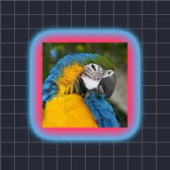

Контурний градієнт

Малює двокольоровий градієнт назовні від країв непрозорих частин шару, наче м'яке кольорове сяйво.
Налаштування
| Налаштування | Тип | Діапазон | Типово |
|---|---|---|---|
| Колір 1 | Колір | – | #FF3C6E |
| Колір 2 | Колір | – | #3CC8FF |
| Ширина | Число | від 1 до 300 | 25 |
| Альфа | Число | від 0% до 100% | 100% |
| Заливка | Число | від 0% до 100% | 100% |
| Згасання | Увімкнено або вимкнено | – | Вимкнено |